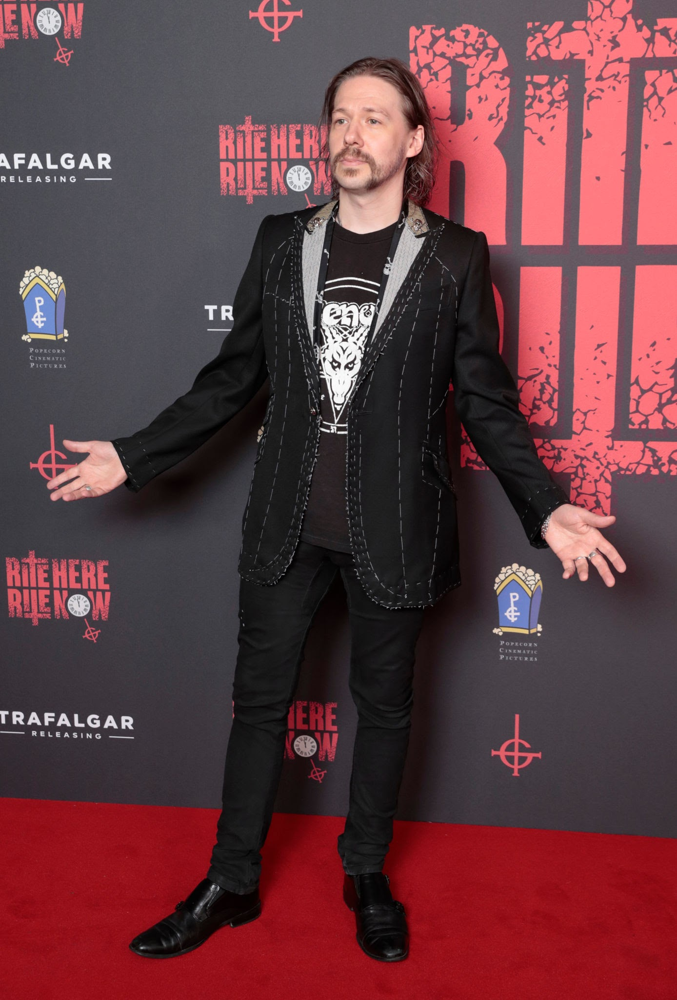

Tobias Jens Forge (Linköping, Suécia, 3 de março de 1981) é um cantor e multi-instrumentista sueco. Ele é um dos fundadores da banda Ghost e o vocalista por trás dos personagens Papa Emeritus I, II, III, IV e Cardinal Copia. Tobias Forge ganhou grande notoriedade no rock devido à sua versatilidade vocal, criatividade musical e teatral, e modelo de composição com o Ghost.
Nascimento: 3 de março de 1981 (idade 43 anos), Linköping, Suécia
Cônjuge: Boel Forge
Grupos musicais: Ghost, Repugnant, Magna Carta Cartel (2006 – 2008), Subvision, Crashdïet (2000 – 2002), Emigrate
Irmãos: Sebastian Forge.
Altura: 1,72 m